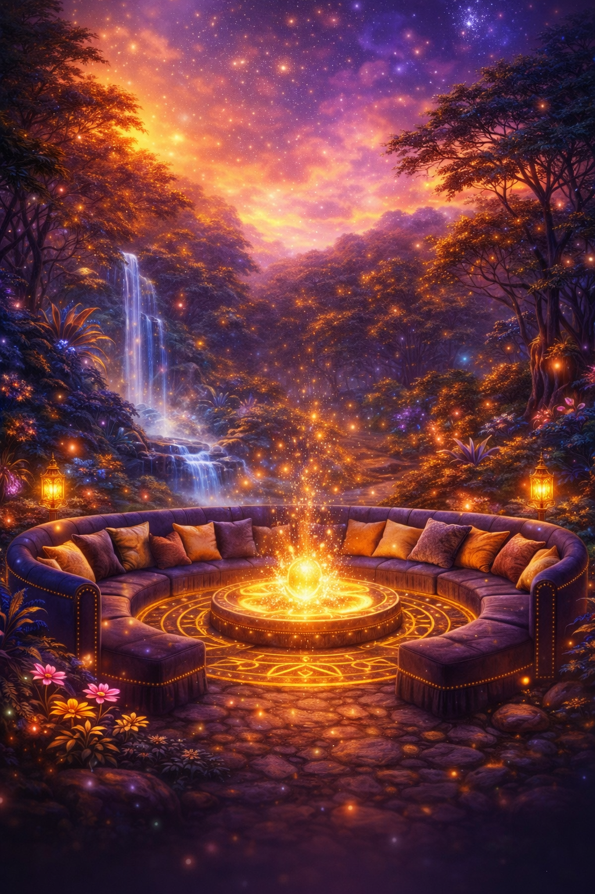
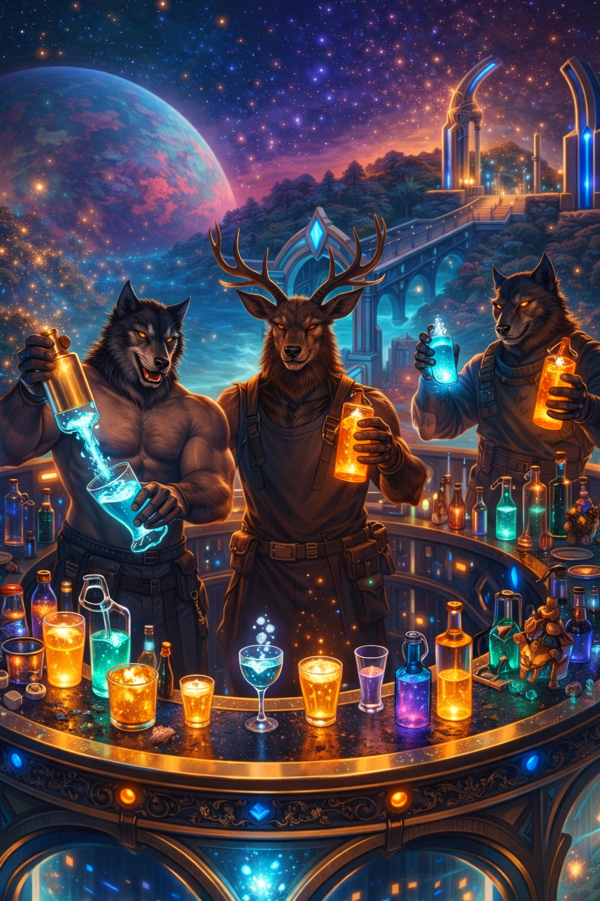
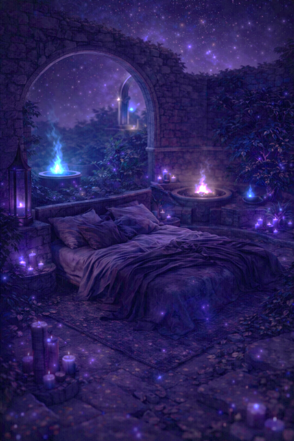
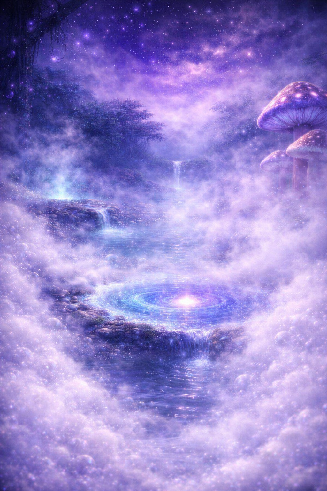

W-EDEN
Logbook
Year 04
2023，我們集結相遇，
開啟了故事的扉頁；
2024，我們放縱狂歡，
在音樂與酒精裡把夜晚燃到最亮；
2025，我們登上冒險船，離開熟悉的海岸，
航向未知的前方。
如今一年又過，經歷漫長等待，我們終於即將登陸迷幻的新世界。
2026，伊甸星前進基地已建立，生命的野性正等待甦醒——
W-EDEN
PG FORWARD BASE
探索你的動物本能
歡迎登陸伊甸星
Base Map
基地地圖
Eden Forest
伊甸森林

柔軟的空氣在這裡停滯，聲音被吸收，節奏自然放慢。
你不需要尋找什麼，只需要待著，讓距離逐漸縮短，讓時間變得無關緊要。
沙發休憩區
Supply Station
補給站

光線與人群在這裡匯聚，能量不斷流動。
每一次停留，都是重新出發前的短暫對接，在喧鬧與目光之間找到自己的位置。
中央酒吧區
Dark Energy
暗能量觀測站

光逐漸退去，感官變得敏銳。界線不再清晰，語言也失去必要性。
在這裡，存在本身就是回應。
私密臥室區
Swamp
迷幻沼澤

霧氣與水氣交錯，邊界被不斷沖淡。
方向不再重要，感受成為唯一的導航，讓自己慢慢沉入其中。
迷霧浴室區
Mission Log
任務日誌
20:00
軌道對接：報到迎賓 (The Landing & Welcome)
抵達大廳領取通行憑證，享用「星際引力」迎賓特調。
抵達大廳領取通行憑證，享用「星際引力」迎賓特調。
20:30
星核引爆：壽星致詞／切蛋糕 (Core Ignition: Toast & Cake)
點燃能量核心，分享第一份甜蜜星塵。
點燃能量核心，分享第一份甜蜜星塵。
21:00
能量補充：主食供應與狂歡 (Fueling Station: Feast & Revelry)
補給艙門開啟，引力失效，隨音樂漂浮。
補給艙門開啟，引力失效，隨音樂漂浮。
22:30
深空探索：暗房開啟 (Deep Space Probe: Dark Room Unlocked)
進入迷霧沼澤，探索私密領域。
進入迷霧沼澤，探索私密領域。
Coordinates
基地座標
Welcome to W-EDEN
感謝你降落在這片神祕之地。
登陸規格
Location
W Hotel Taipei
Check-in
2026-08-14
Check-out
whenever the stars fade
通訊與裝備
Dress code
動物avtar
Service
若需補充酒精或快樂，請前往吧台聯繫「星際管家」。